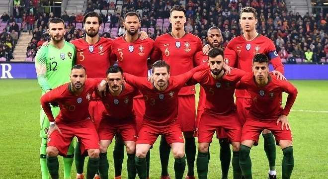

Seleção de Portugal nas Copas do Mundo
A Seleção Portuguesa de Futebol é a equipa nacional de Portugal e representa o país nas competições internacionais de futebol. É gerida pela Federação Portuguesa de Futebol. A seleção estreou-se oficialmente a 18 de dezembro de 1921 (há 100 anos, 4 meses e 9 dias) contra a Espanha, jogo que acabou 3-1 a favor dos espanhóis. A primeira vitória foi obtida a 18 de junho de 1925, contra a Itália, por 1-0. A estreia de Portugal na fase final de uma grande competição deu-se em 1966, onde a Seleção das Quinas chegou às meias-finais do Mundial da FIFA, onde seria vencida pela equipa anfitriã, e futura campeã, a Inglaterra. Portugal terminou o torneio em terceiro lugar, após vencer a União Soviética. Portugal chegou pela primeira vez à fase final de um Campeonato da Europa em 1984, chegando também às meias finais e perdendo da mesma forma com o anfitrião do torneio e futuro campeão, a França. A Seleção de Portugal é considerada uma equipa com um futebol latino (semelhante ao que é apresentado pela Espanha, Brasil ou Argentina), baseado na posse de bola, criatividade, perícia e espontaneidade individual, em detrimento da compleição física ou rigidez tática.
A "Selecção das Quinas", como é conhecida a seleção portuguesa em seu país, participou em 2018 de sua sétima edição da Copa do Mundo de futebol. Em duas ocasiões os portugueses chegaram às semifinais. A melhor campanha ocorreu em 1966. A equipe de Eusébio chegou em terceiro lugar. Em 2006 o selecionado português comandado por Luís Felipe Scolari e liderados em campo pelos craques Figo e Cristiano Ronaldo chegou em 4º lugar. Em 2010 os portugueses chegaram às oitavas-de-final do Mundial. Nas outras participações em Copas do Mundo (1986, 2002 e 2014) a seleção portuguesa não passou da primeira fase. Em 2018, a Seleção Portuguesa foi eliminada nas oitavas-de-final.
